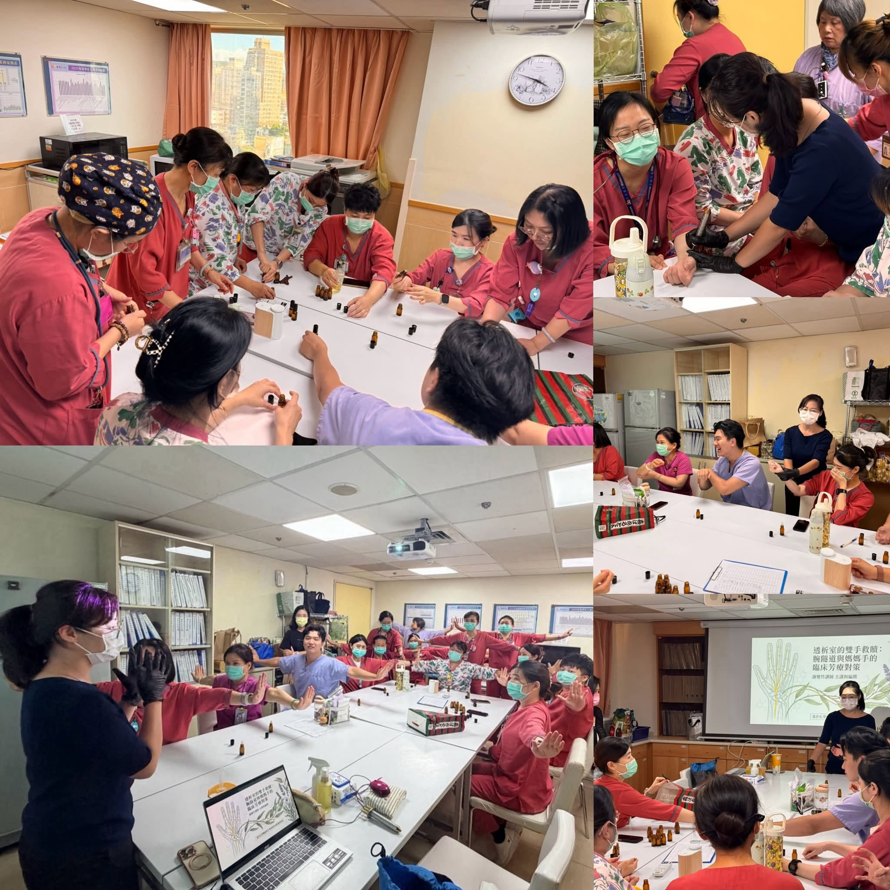
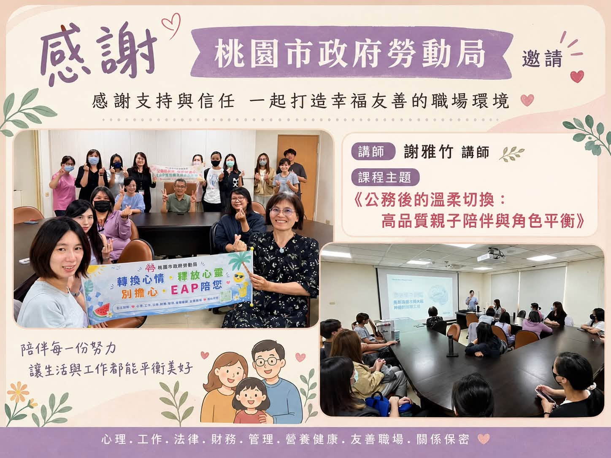
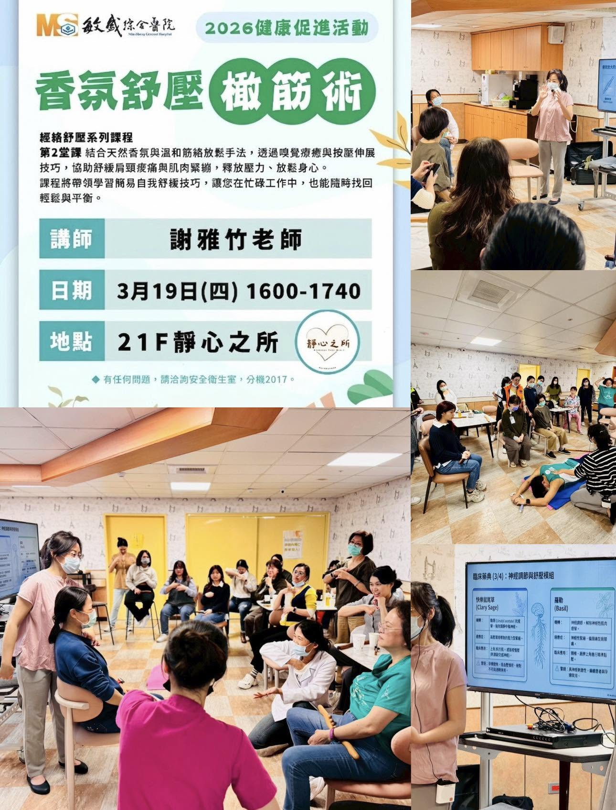
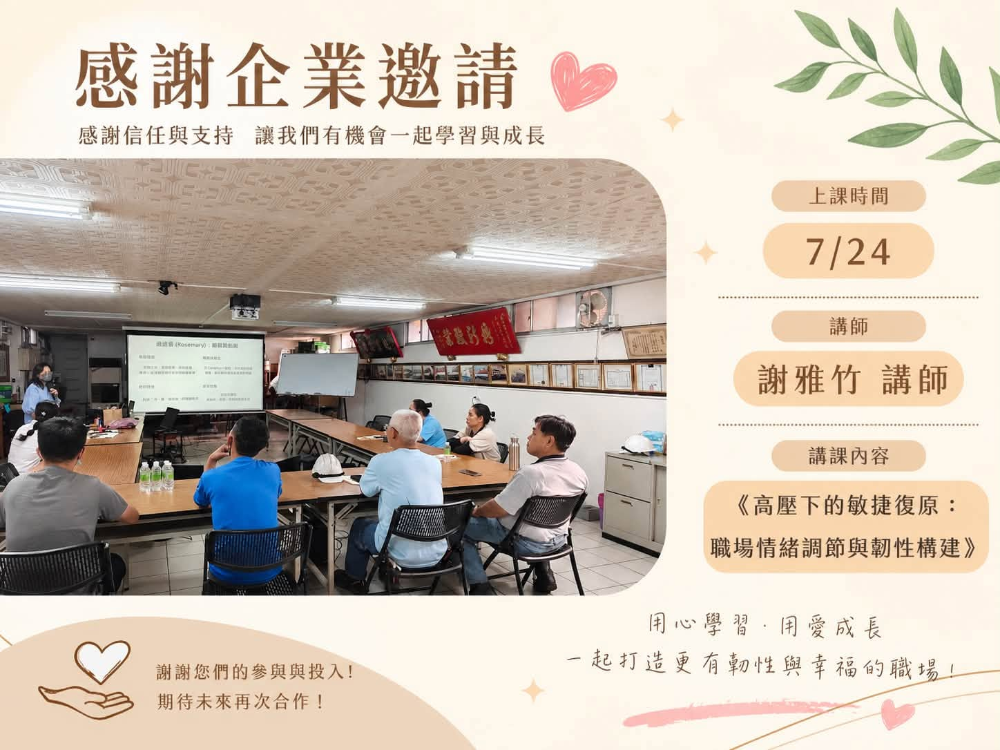
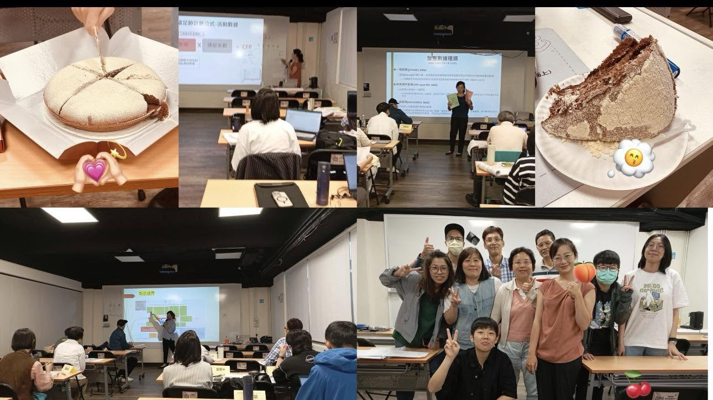
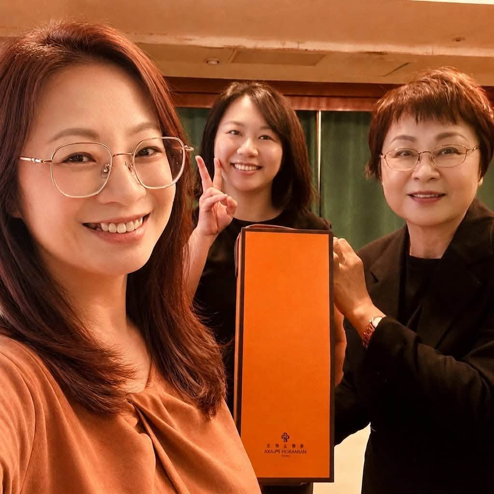

走出「痛了才按、按完又痛」的循環，回歸人體解剖生理學。由資深護理師 謝雅竹 親自引導，傳授能真正融入日常生活、隨時隨地為自己與家人釋放緊繃的專業實作技巧。
身體是陪伴我們一輩子的居所，唯有理解自己的肌理，才能掌握真正長久的自癒力
被動接受按摩只能暫時緩解當下，一旦重回高壓辦公環境，不良姿勢又讓僵硬復發。學會自體鬆解，才能在緊繃發生的第一時間自我修復。
傳統按摩常以暴力硬按導致發炎，家人互按也常因不得要領而手指疼痛。透過醫護解剖學引導，懂得利用身體槓桿與力學，不費力就能精準深層鬆開。
思緒過度緊繃會讓大腦難以關機。研習中傳授臨床精油配方邏輯與正念呼吸嗅吸技巧，讓您在睡前或工作空檔能迅速引導神經系統進入深層睡眠。
學會正確的手法，不僅能照顧自己的肩頸與腰背，更能為懷孕的伴侶舒緩水腫、為孩子進行情緒撫觸，成為全家人最溫柔堅實的健康後盾。
以臨床醫護的嚴謹，成就最溫柔、最可持續的生活保健手技
由國家合格臨床護理師親授，不盲目死記穴道，從肌肉起止點、肌筋膜走向與神經走行出發，確保每一次練習都精準、有效且絕對安全。
拒絕昂貴複雜的器材，我們傳授能輕鬆融入辦公室椅上伸展、居家沙發放鬆與睡前芳療的實用技能，讓身心平衡成為日常習慣。
堅持小班制教學，導師親自觸摸校正施力角度與按壓節奏，確保每位學員都能真正感受肌纖維鬆解的正確手感，100% 帶得走。
「身體是最好的自癒者；懂得解剖肌理，方能溫柔且精準地善待自己。」
在多年的醫療臨床生涯中，我看過無數因長年累積疲累、重度工作壓力而身心失衡的病患與同仁。我們往往習慣在痛不可耐時，才被動尋求外界的短暫緩解。
「翠萃竹韻」的創立，是希望將護理專業的解剖醫學、經絡撇筋技巧與純淨芳療，轉化為人人皆可掌握的生活教育。當您親手學會傾聽身體的緊繃訊號，您就擁有了陪伴自己一生的健康自癒力。
小班實作教學・手把手校正手法・傳授一輩子帶得走的身心照護技巧

以人體解剖學為核心，透析斜方肌、膏肓、腰背與手部肌筋膜走向。教導如何運用自體重力與精準力學，在不費力的情況下精準釋放深層板機點（Trigger Points），連醫院臨床護理人員都推崇的實用手技！
從臨床芳療藥典切入，學習歐盟有機認證純精油的身心調節特性。結合微循環淋巴循行引流手法與正念深層呼吸嗅吸，讓您學會為自己調配個人專屬安神放鬆香氛，在夜間啟動深層副交感神經修復。
翠萃竹韻目前全心投入於身心自癒教學、親職教育與企業健康培訓，致力於賦能學員掌握能受用一生的自我照護能力。為確保教學品質，個人一對一調理服務全面轉為預約式微／限額制，僅開放予參訓學員之個案體況深度評估與手法示範。如需預約個案諮詢，歡迎加 LINE 私訊洽詢名額。
受邀公部門與大型綜合醫院，將專業安心的照護手法帶入家庭日常

獲桃園市政府勞動局正式邀請主講 EAP 系列講座。教導父母在繁忙工作之餘，如何透過溫柔安全的情感撫觸與呼吸引導，安撫孩子情緒、排解壓力，並在日常互動中建立深厚的親密依附關係。

獲敏盛綜合醫院健康促進中心邀請開辦「經絡舒壓系列課程」。結合天然香氛與臨床解剖經絡放鬆，協助學員舒緩肩頸痠痛與深層疲憊，孕媽咪亦能在此掌握安全溫和的下肢與腰背居家照護手法。
企業的永續發展（ESG 中的 S - 社會責任）始於對員工身心健康的實質重視。由具備臨床醫護與 ESG 講師背景的謝雅竹老師親授，協助企業建立充滿活力與韌性的健康職場文化。


來自每位在翠萃竹韻學會自主照顧身體的學員心得與真摯感謝

「上完雅竹老師的經絡撇筋研習，最大的收穫是終於學會『如何正確對待自己的身體』！以前總是靠給人按，現在學會用槓桿與重力在辦公室自己鬆解，非常實用！」
「以前去傳統推拿常常被按到瘀青發炎。但在雅竹老師的課堂上，老師用解剖模型清楚解釋哪條肌肉在代償，手法深層卻完全不需要死力！學完回家還能幫先生舒緩肩頸，收穫遠超預期。」
「公司舉辦 ESG 減壓講座邀請雅竹老師來上課，整場講座毫無冷場！老師教的椅子伸展與精油嗅吸呼吸法，我們部門同事到現在每天下午都在做，真正改善了工作倦怠感。」
加入官方 LINE，告知您或機構期望了解之課程主題（個人自癒、親職共學或企業內訓）。
由謝雅竹護理師親自了解您的學習目標，推薦最適合的研習梯次或客製規劃內訓大綱。
在清幽靜謐的空間中實作演練，由導師親自手把手校正施力角度，建立精準肌肉手感。
將帶得走的自癒手法帶回生活與職場，隨時隨地為自己與最愛的人維持身心輕盈平衡。